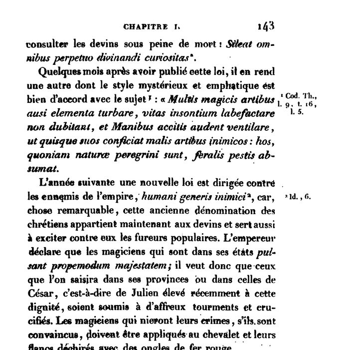

“Humani generis inimici” (tome I, p. 143)
French: tome I, p. 143, scan. Beugnot’s side notes: “Cod. Th., l. 9, t. 16, l. 5” for the first law and “Id., 6” for the second. Highlighted: the observation Lecky repeats.

A few months after publishing this law, he issued another whose mysterious and emphatic style suits its subject well: “Many, by magic arts, dare to disturb the elements, do not hesitate to undermine the lives of the innocent, and, calling up the shades of the dead, dare to stir them up so that each may destroy his enemies by evil arts: let a deadly plague carry these off, since they are strangers to nature.”
The following year a new law was directed against the enemies of the empire, humani generis inimici [enemies of the human race]: for, remarkably, this old name for the Christians now belongs to the diviners, and serves also to stir up popular fury against them. The emperor declares that the magicians in his states all but strike at his majesty; he therefore wills that those seized in his provinces or in those of the Caesar, that is, of Julian, recently raised to that dignity, be subjected to frightful torments and crucified. Magicians who deny their crimes, if they are convicted, are to be put on the rack and their sides torn with red-hot iron claws.
Original French
Quelques mois après avoir publié cette loi, il en rend une autre dont le style mystérieux et emphatique est bien d’accord avec le sujet : « Multis magicis artibus ausi elementa turbare, vitas insontium labefactare non dubitant, et Manibus accitis audent ventilare, ut quisque suos conficiat malis artibus inimicos : hos, quoniam naturæ peregrini sunt, feralis pestis absumat. »
L’année suivante une nouvelle loi est dirigée contre les ennemis de l’empire, humani generis inimici, car, chose remarquable, cette ancienne dénomination des chrétiens appartient maintenant aux devins et sert aussi à exciter contre eux les fureurs populaires. L’empereur déclare que les magiciens qui sont dans ses états pulsant propemodum majestatem ; il veut donc que ceux que l’on saisira dans ses provinces ou dans celles de César, c’est-à-dire de Julien élevé récemment à cette dignité, soient soumis à d’affreux tourments et crucifiés. Les magiciens qui nieront leurs crimes, s’ils sont convaincus, doivent être appliqués au chevalet et leurs flancs déchirés avec des ongles de fer rouge.
Beugnot’s “ongles de fer rouge” (red-hot iron claws) is Lecky’s “their flesh was to be torn from their bones with hooks of iron” (ch. I, text at note 28). The Latin of the law itself, with “humani generis inimici credendi sunt”, is on the Codex Theodosianus page.
Backlinks
Every place in Rationalism in Europe that links to this page (generated automatically when the site is built).
- Chapter I: note 29